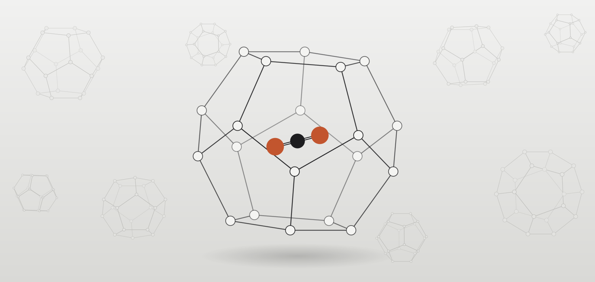

CARE Lab at Kyonggi University uses the thermodynamics of gas hydrates and phase equilibria to advance carbon capture and storage, clean energy, and water resources.

Some of our work
Our research spans gas hydrate science, CO2 capture, transport and storage, and hydrate-based water treatment, combining in-situ spectroscopy, phase-equilibrium measurements, molecular simulation and machine learning.


Recent publications
- S. Mun, W. Go, J. Mok, S. Kim, H. Jang, Y. Seo Amino acid derivatives as kinetic hydrate inhibitors for CO2 transport and storage: Mechanistic insights from experiments and molecular dynamics simulations. Chemical Engineering Journal, 548, 181769 (2026). doi:10.1016/j.cej.2026.181769
- J. Lee, J. Lee, M. Park, S. Kim, M. Kim, J. Mok, W. Go, Y. Lee, Y. Seo Multiphase flow and hydrate plugging during liquid CO2 injection into water-saturated sediments: Experimental and CFD insights for geological CO2 storage. Journal of Cleaner Production, 574, 149133 (2026). doi:10.1016/j.jclepro.2026.149133
- J. Lee, J. Park, J. Kwak, J. Lee, J. Mok, Y. Lee, B. Jun, Y. Seo, W. Choi Influence of anti-agglomerants and water cut on flow assurance and CO2 capture in a model water-in-oil system for maritime applications. Energy & Fuels, 40(34), 19006–19017 (2026). doi:10.1021/acs.energyfuels.6c02599
- M. Park, J. Park, J. Lee, S. Kim, J. Mok, Y. Seo Unusual CO2 uptake driven by coupled hydrate–geochemical trapping mechanisms: Implications for geological carbon sequestration. Chemical Engineering Journal, 546, 180161 (2026). doi:10.1016/j.cej.2026.180161
- S. Jeong, I. Choi, J. Mok, W. Choi, S.H. Kim, S. Moon, S.H. Chae, H. Rho, Y. Yoon, B.M. Jun Metal-organic framework-based adsorbents for the removal of inorganic pollutants from wastewater: Synthesis strategies, adsorption performance, and mechanisms. Separation and Purification Technology, 407, 139187 (2026). doi:10.1016/j.seppur.2026.139187